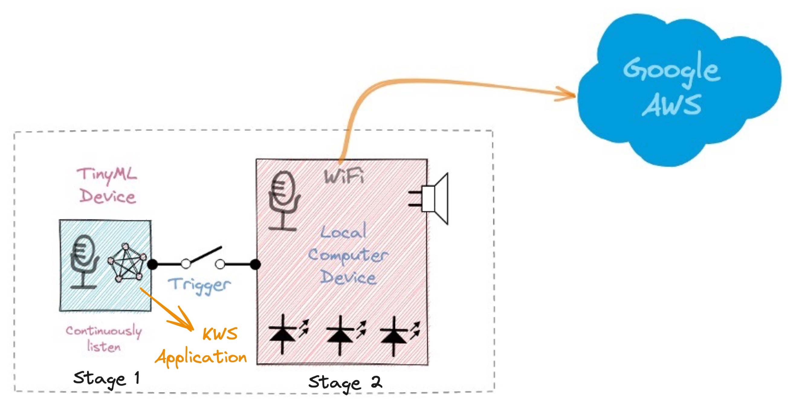
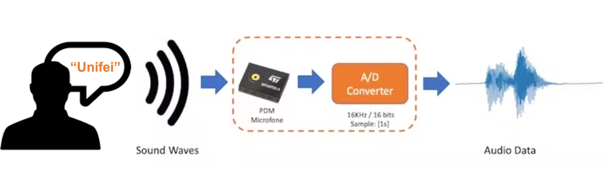
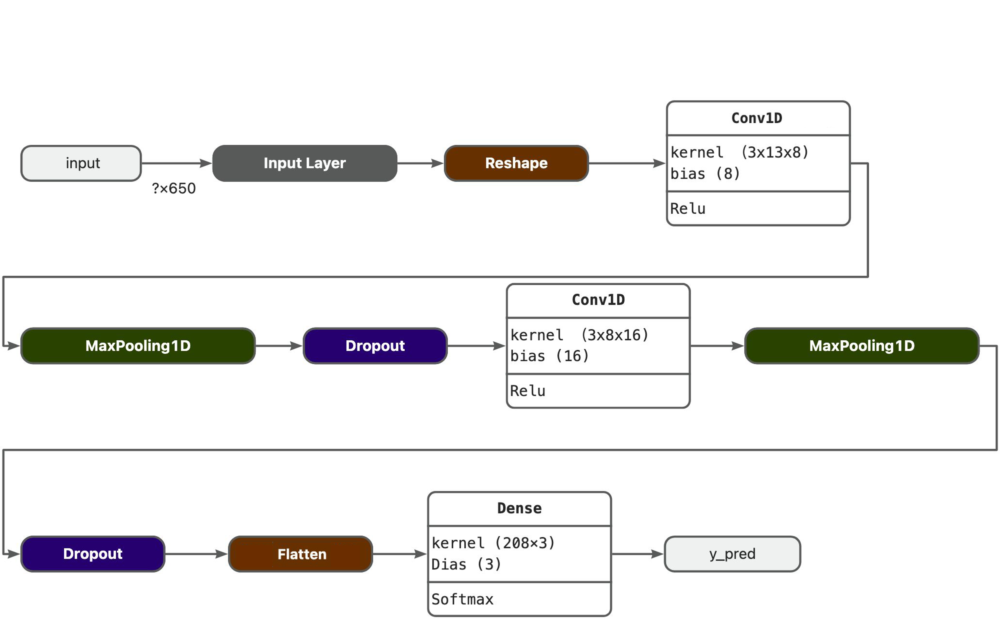
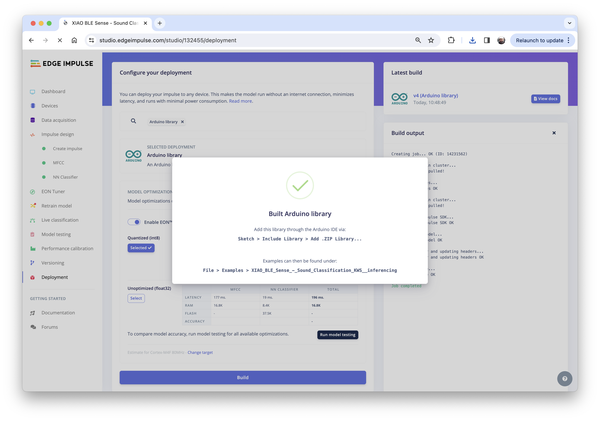

4.3 TinyML Made Easy: Sound Classification (KWS)

We are continuing our exploration of Machine Learning on a giant tiny device, the Seeed Studio XIAO nRF52840 Sense（also called XIAO BLE Sense. And now, classifying sound waves.
4.3.1 Things used in this project
Hardware components

Software apps and online services


4.3.2 Introduction
In the last section, TinyML Made Easy: Anomaly Detection & Motion Classification, we explored Embedded Machine Learning, or simply TinyML, running on the Seeed XIAO nRF52840 Sense. Besides installing and testing the device, we explored motion classification using actual data signals from its onboard accelerometer. This new project will use the same XIAO nRF52840 Sense to classify sound, explicitly working as “Key Word Spotting” (KWS). A KWS is a typical TinyML application and an essential part of a voice assistant.
But how does a voice assistant work?
To start, it is essential to realize that Voice Assistants on the market, like Google Home or Amazon Echo-Dot, only react to humans when they are “waked up” by particular keywords such as ” Hey Google” on the first one and “Alexa” on the second.

In other words, recognizing voice commands is based on a multi-stage model or Cascade Detection. 
Stage 1: A smaller microprocessor inside the Echo Dot or Google Home continuously listens to the sound, waiting for the keyword to be spotted. For such detection, a TinyML model at the edge is used (KWS application).
Stage 2: Only when triggered by the KWS application on Stage 1 is the data sent to the cloud and processed on a larger model.
The video below shows an example of a Google Assistant being programmed on a Raspberry Pi (Stage 2), with an Arduino Nano 33 BLE as the tinyML device (Stage 1): https://youtu.be/e_OPgcnsyvM
To explore the above Google Assistant project, please see the tutorial: Building an Intelligent Voice Assistant From Scratch.
4.3.3 The KWS Project

Our KWS application will recognize three classes of sound:
- Keyword 1: UNIFEI
- Keyword 2: IESTI
- “SILENCE” (no keywords spoken, only background noise is present)
Optionally, for real-world projects, it is advised to include different words than keywords 1 and 2 in the class “Silence” (or Background) or even create an extra class with such words (for example a class “others”).
4.3.3.1 The Machine Learning Workflow
The main component of the KWS application is its model. So, we must train such a model with our specific keywords:

4.3.3.2 Dataset
The critical component of Machine Learning Workflow is the dataset. Once we have decided on specific keywords (UNIFEI and IESTI), all datasets should be created from zero. When working with accelerometers, creating a dataset with data captured by the same type of sensor was essential. In the case of sound, it is different because of what we will classify as audio data.
The critical difference between sound and audio is the type of energy. Sound is mechanical perturbation (longitudinal sound waves) that propagate through a medium, causing variations of pressure in it. Audio is an electrical (analog or digital) signal representing sound.
The sound waves should be converted to audio data when we speak a keyword. The conversion should be done by sampling the signal generated by the microphone in 16KHz with a 16-bit depth.

So, any device that can generate audio data with this basic specification (16Khz/16bits) will work fine. As a device, we can use the proper XIAO nRF52840 Sense, a computer, or even your mobile phone.
4.3.3.3 Capturing online Audio Data with Edge Impulse and a smartphone
In the TinyML Made Easy: Anomaly Detection & Motion Classification section, we learned how to install and test our device using the Arduino IDE and connect it to Edge Impulse Studio for data capturing. For that, we use the EI CLI function Data Forwarder, but according to Jan Jongboom, Edge Impulse CTO, audio goes too fast for the data forwarder to be captured. If you have PCM data already, then turning it into a WAV file and uploading it with the uploader is the easiest. With accelerometers, our sample frequency was around 50Hz, with audio being 16KHz.
So, we can not connect the XIAO directly to the Studio. But we can capture sound using any smartphone connected to the Studio online.
We will not explore this option here, but you can easily follow the EI documentation and tutorial.
4.3.3.4 Capturing Audio Data with the XIAO nRF52840 Sense
The easiest way to capture audio and save it locally as a .wav file is using an expansion board for the XIAO family of devices, the Seeed Studio XIAO Expansion board.


This expansion board enables the building of prototypes and projects easily and quickly, using its rich peripherals such as OLED Display, SD Card interface, RTC, passive buzzer, RESET/User button, 5V servo connector, and multiple data interfaces.
This project will focus on classifying keywords, and the MicroSD card available on the device will be very important in helping us with data capture.
Saving recorded audio from the microphone on an SD card
Connect the XIAO nRF52840 Sense on the Expansion Board and insert an SD card into the SD card slot at the back. > The SD Card should be pre-formated as FAT or exFAT.

Next, download the Seeed_Arduino_FS Library as a zip file:

And install the downloaded library: Seeed_Arduino_Mic-master.zip on your Arduino IDE: Sketch -> Include Library -> Add .ZIP Library...

Next, navigate to File > Examples > Seeed Arduino Mic > mic_Saved_OnSDcard to open the sketch: mic_Saved_OnSDcard.
Each time you press the reset button, a 5 seconds audio sample is recorded and saved on the SD card. I changed the original file to add LEDs to help during the recording process as below:
- During the time that LED Red is ON is possible to record ==> RECORD
- During the file writing process, LED Red is OFF ==> WAIT
- When finished writing, LED Green is ON ==> Press Reset Button once and wait for LED Red ON again, and proceed with a new sample recording
I realized that sometimes at the beginning and the end of each sample, a “spike” was recorded, so I cut the initial 300ms from each 5s sample. The spike verified at the end always happened after the recording process and should be eliminated on Edge Impulse Studio before training. Also, I increased the microphone gain to 30 dB.
The complete file (Xiao_mic_Saved_OnSDcard.ino) can be found on the Git Hub (3_KWS): Seeed-XIAO-BLE-Sense.
During the recording process, the.wav file names are shown on Serial Monitor:

Take the SD card from the Expansion Board and insert it into your computer:

The files are ready to be uploaded to Edge Impulse Studio
4.3.3.5 Capturing (offline) Audio Data with a smartphone or PC
Alternatively, you can use your PC or smartphone to capture audio data with a sampling frequency 16KHz and a bit depth of 16 Bits. A good app for that is Voice Recorder Pro (IOS). Save your record as .wav files and send them to your computer.

Note that any smartphone app can be used for audio recording or even your computer, for example using Audacity.
4.3.3.6 Training model with Edge Impulse Studio
When the raw dataset is created, you should initiate a new project at Edge Impulse Studio:

Once the project is created, go to the Data Acquisition section and select the Upload Existing Data tool. Choose the files to be uploaded, for example, I started uploading the samples recorded with the XIAO nRF52840 Sense:

The samples will now appear in the Data acquisition section:

Click on three dots after the sample name and select Split sample. Once inside de tool, split the data into 1-second records (try to avoid start and end portions):

This procedure should be repeated for all samples. After that, upload other class samples (IESTI and SILENCE) captured with the XIAO and your PC or smartphone.
Note: For longer audio files (minutes), first, split into 10-second segments and after that, use the tool again to get the final 1-second splits.
In the end, the dataset has around 70 1-second samples for each class:

Now, you should split that dataset into Train/Test. You can do it manually (using the three dots menu, moving samples individually) or using Perform Train / Test Split on Dashboard - Danger Zone.

We can optionally check all datasets using the tab Data Explorer. The data points seem apart, which means that the classification model should work:

4.3.3.7 Creating Impulse (Pre-Process / Model definition)
An impulse takes raw data, uses signal processing to extract features, and then uses a learning block to classify new data.

First, we will take the data points with a 1-second window, augmenting the data, sliding that window each 500ms. Note that the option zero-point pad is set. It is important to fill with zeros samples smaller than 1 second in some cases, I reduced the 1000 ms window on the split tool to avoid noises and spikes.
Each 1-second audio sample should be pre-processed and converted to an image (for example, 13 x 50 x 1). We will use Audio (MFCC), which extracts features from audio signals using Mel Frequency Cepstral Coefficients, which are well suited for the human voice, which is our case here.

Next, we select the Classification block to build our model from scratch using a Convolution Neural Network (CNN).
4.3.3.8 Pre-Processing (MFCC)
The next step is to create the images to be trained in the next phase:

We will keep the default parameter values. We do not spend much memory to pre-process data (only 17KB), but the processing time is relatively high (177 ms for a Cortex-M4 CPU as our XIAO). Save parameters and generate features:

Going under the hood
To understand better how the raw sound is preprocessed, look at the Feature Engineering for Audio Classification chapter. You can play with the MFCC features generation by downloading this notebook from GitHub or Opening it In Colab.
4.3.3.9 Model Design and Training
We will use a simple Convolution Neural Network (CNN) model, tested with 1D and 2D convolutions. The basic architecture has two blocks of Convolution + MaxPooling ([8] and [16] filters, respectively) and a Dropout of [0.25] for the 1D and [0.5] for the 2D. For the last layer, after Flattening, we have [3] neurons, one for each class:

As hyper-parameters, we will have a Learning Rate of [0.005] and a model trained by [100] epochs. We will also include a data augmentation method based on SpecAugment. We trained the 1D and the 2D models with the same hyperparameters. The 1D architecture had a better overall result (91.1% accuracy) when compared with 88% of the 2D, so we will use the 1D.
Using 1D convolutions is more efficient because it requires fewer parameters than 2D convolutions, making them more suitable for resource-constrained environments.

If you want to understand what is happening “under the hood,” you can download the pre-processed dataset (
MFCC training data) from theDashboardtab and run this Jupyter Notebook, playing with the code or Opening it In Colab. You should adapt the notebook for your data and model. For example, you can analyze the accuracy by each epoch:

4.3.3.10 Testing
Testing the model with the data put apart before training (Test Data), we got an accuracy of 75%. Based on the small amount of data used, it is OK, but I strongly suggest increasing the number of samples.

Collecting more data, the Test accuracy moved up around 5%, going from 75% to around 81%:

Now, we can proceed with the project, but before deployment on our device, it is possible to perform Live Classification using a Smart Phone, confirming that the model is working with live and real data:

4.3.3.11 Deploy and Inference
The Studio will package all the needed libraries, preprocessing functions, and trained models, downloading them to your computer. You should select the option Arduino Library and at the bottom, choose Quantized (Int8) and [Build].

A Zip file will be created and downloaded to your computer:

On your Arduino IDE, go to the Sketch tab and select the option Add .ZIP Library.

And Choose the.zip file downloaded by the Studio:

Now, it is time for a real test. We will make inferences wholly disconnected from the Studio. Let’s change one of the code examples created when you deploy the Arduino Library.
In your Arduino IDE, go to the File/Examples tab and look for your project, and on examples, select nano_ble33_sense_microphone_continuous:

Even though the XIAO is not the same as the Arduino, both have the same MPU and PDM microphone, so the code works as it is. Upload the sketch to XIAO and open the Serial Monitor. Start talking about one or another Keyword and confirm that the model is working correctly:

4.3.3.12 Postprocessing
Now that we know that the model is working by detecting our two keywords, let’s modify the code so we can see the result with the XIAO nRF52840 Sense completely offline (disconnected from the PC and powered by a battery).
The idea is that whenever the keyword UNIFEI is detected, the LED Red will be ON; if it is IESTI, LED Green will be ON, and if it is SILENCE (No Keyword), both LEDs will be OFF.
If you have the XIAO nRF52840 Sense installed on the Expansion Board, we can display the class label and its probability. Otherwise, use only the LEDs.
Let’s go by Parts: Installing and Testing the SSD Display In your Arduino IDE, Install the u8g2 library and run the below code for testing:
#include <Arduino.h>
#include <U8x8lib.h>
#include <Wire.h>
U8X8_SSD1306_128X64_NONAME_HW_I2C u8x8(PIN_WIRE_SCL, PIN_WIRE_SDA, U8X8_PIN_NONE);
void setup(void) {
u8x8.begin();
u8x8.setFlipMode(0); // set number from 1 to 3, the screen word should rotate 180
}
void loop(void) {
u8x8.setFont(u8x8_font_chroma48medium8_r);
u8x8.setCursor(0, 0);
u8x8.print("Hello World!");
}And you should see the “Hello World” displayed on the SSD:

Now, let’s create some functions that, depending on the values of pred_index and pred_value, will trigger the proper LED and display the class and probability. The code below will simulate some inference results and present them on display and LEDs:
/* Includes ---------------------------------------------------------------- */
#include <Arduino.h>
#include <U8x8lib.h>
#include <Wire.h>
#define NUMBER_CLASSES 3
/** OLED */
U8X8_SSD1306_128X64_NONAME_HW_I2C oled(PIN_WIRE_SCL, PIN_WIRE_SDA, U8X8_PIN_NONE);
int pred_index = 0;
float pred_value = 0;
String lbl = " ";
void setup() {
pinMode(LEDR, OUTPUT);
pinMode(LEDG, OUTPUT);
pinMode(LEDB, OUTPUT);
digitalWrite(LEDR, HIGH);
digitalWrite(LEDG, HIGH);
digitalWrite(LEDB, HIGH);
oled.begin();
oled.setFlipMode(2);
oled.setFont(u8x8_font_chroma48medium8_r);
oled.setCursor(0, 0);
oled.print(" XIAO Sense KWS");
}
/**
* @brief turn_off_leds function - turn-off all RGB LEDs
*/
void turn_off_leds(){
digitalWrite(LEDR, HIGH);
digitalWrite(LEDG, HIGH);
digitalWrite(LEDB, HIGH);
}
/**
* @brief Show Inference Results on OLED Display
*/
void display_oled(int pred_index, float pred_value){
switch (pred_index){
case 0:
turn_off_leds();
digitalWrite(LEDG, LOW);
lbl = "IESTI " ;
break;
case 1:
turn_off_leds();
lbl = "SILENCE";
break;
case 2:
turn_off_leds();
digitalWrite(LEDR, LOW);
lbl = "UNIFEI ";
break;
}
oled.setCursor(0, 2);
oled.print(" ");
oled.setCursor(2, 4);
oled.print("Label:");
oled.print(lbl);
oled.setCursor(2, 6);
oled.print("Prob.:");
oled.print(pred_value);
}
void loop() {
for (int i = 0; i < NUMBER_CLASSES; i++) {
pred_index = i;
pred_value = 0.8;
display_oled(pred_index, pred_value);
delay(2000);
}
}Running the above code, you should get the below result:

You should merge the above code (Initialization and functions) with the nano_ble33_sense_microphone_continuous.ino you initially used to test your model. Also, you should include the below code on loop() between the lines:
ei_printf(": \n");
...
#if EI_CLASSIFIER_HAS_ANOMALY == 1And replacing the original function to print inference results on the Serial Monitor:
int pred_index = 0; // Initialize pred_index
float pred_value = 0; // Initialize pred_value
for (size_t ix = 0; ix < EI_CLASSIFIER_LABEL_COUNT; ix++) {
ei_printf(" %s: %.5f\n", result.classification[ix].label, result.classification[ix].value);
if (result.classification[ix].value > pred_value){
pred_index = ix;
pred_value = result.classification[ix].value;
}
}
display_oled(pred_index, pred_value);Here you can see how the final project is: https://youtu.be/1ex88hSqqyI
The complete code can be found on the GitHub (3_KWS): Seeed-XIAO-BLE-Sense.
4.3.3.13 Conclusion
The Seeed XIAO nRF52840 Sense is really a giant tiny device! However, it is powerful, trustworthy, not expensive, low power, and has suitable sensors to be used on the most common embedded machine learning applications such as movement and sound.
Even though Edge Impulse does not officially support XIAO nRF52840 Sense (yet!), we also realized that it could use Studio for training and deployment.
On the GitHub repository, you will find the last version of the codes in the 3_KWS folder: Seeed-XIAO-BLE-Sense
Before we finish, consider that Sound Classification is more than just voice. For example, you can develop TinyML projects around sound in several areas as:
- Security (Broken Glass detection)
- Industry (Anomaly Detection)
- Medical (Snore, Toss, Pulmonary diseases)
- Nature (Beehive control, insect sound)